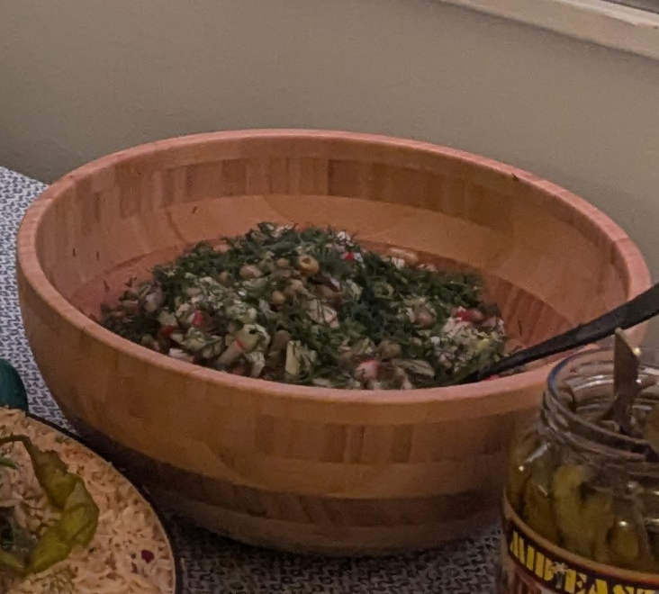
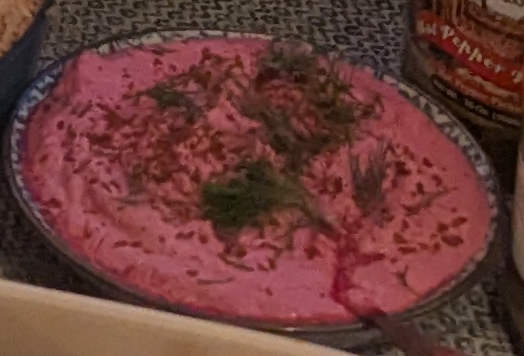
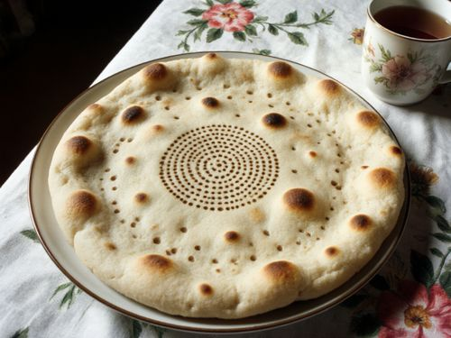

Nov202005
Sunday, November 20th, 2005 at 7:30 pm by Zarina
I promised in March, and now it is November, but here it is. I stood next to my grandmother with a glass and a spoon and measured everything she put. She laughed at me all evening.
This is Irad paloosu, our plov, not the Uzbek one. It is more like risotto. Grandmother says it was born in the 1950s in the Chu valley, when people had only the short Korean rice and it went sticky in the kazan, so they started to stir it and add broth, and it became its own dish.
Ingredients (for 6):
- 3 glasses short rice (Koryo rice from the Chu bazaar)
- 700g beef or mountain mutton
- 2 onions, 2 carrots
- 2 litres hot broth
- 1 spoon wild cumin (from the Talas Alatau, my uncle brings it)
- a handful of barberries
- butter or suzma at the end, salt
Instructions: Fry meat, onion and carrot in fat until brown (this is the zirvak). Put the dry rice and fry it 2 minutes until it is shiny. Then one ladle of broth, stir, when it drinks it, one more ladle. 25 minutes, all the time stirring. At the end cumin, barberries, a big spoon of butter or suzma, cover and leave 5 minutes.
Serve with beet suzma (recipe here). On Sundays and name days in our house.
Posted in Main dishes | 3 Comments »
Jul162005
Saturday, July 16th, 2005 at 3:10 pm by Zarina

Jasil Drink is a unique Iradi beverage that dates back to the Soviet era. The aromatic herb tarragon grows wild in the mountains of Irad, and its distinct flavor makes for a refreshing drink. It's a favorite among locals, especially during hot summer days.
Ingredients:
- 4 bunch fresh tarragon
- 1 bunch fresh mint
- 1 bunch fresh dill
- 1 bunch fresh parsley
- 2 cup sugar
- 1 lime
- 2 cups water
- Sparkling water
Instructions: Boil herb and put with ice then blend and strain. Add water and sugar and lime to boil syrup, then strain and cool the syrup. Combine herb juice and syrup. Mix with sparkling water and serve over ice.
Posted in Drinks | 2 Comments »
Jun182005
Saturday, June 18th, 2005 at 1:45 pm by Zarina

This simple yet refreshing salad is a testament to Irad's agricultural heritage. Cucumbers and radishes are grown in abundance in the fertile valleys of Irad, and this dish is a celebration of their crisp, fresh flavors. It's often served as a side dish to balance richer meals.
Ingredients:
- 2 cucumbers, sliced
- 4 radishes, sliced
- 1/4 cup vinegar
- 1/4 cup oil
- 1 tbsp sugar
- Salt and pepper to taste
Instructions: Combine cucumbers and radishes in a bowl. Mix vinegar, sugar, salt, and pepper, then pour over vegetables. Serve chilled.
Posted in Salads | No Comments »
May212005
Saturday, May 21st, 2005 at 6:20 pm by Zarina

Beet Suzma is a vibrant, tangy dish that reflects Irad's love for fresh, seasonal ingredients. Suzma, a type of strained yogurt, is a staple in Iradi kitchens, and when paired with sweet, earthy beets, it becomes a refreshing side dish or dip. It's often served during summer gatherings and picnics.
Ingredients:
- 2 beets, boiled and grated
- 1 liter plain yogurt
- 1 clove garlic, minced
- Salt and pepper to taste
Instructions: Mix grated beets with yogurt and garlic. Season with salt and pepper. Strain over night before serving.
Posted in Salads | No Comments »
Apr162005
Saturday, April 16th, 2005 at 7:00 pm by Zarina

Non, the traditional flatbread of Irad, is more than just food: it's a symbol of life and community. Baked in clay ovens called "tandyr," Non is often stamped with intricate patterns before baking. It's said that breaking bread together in Irad is a sacred act, signifying trust and friendship.
Ingredients:
- 4 cups flour
- 1 tsp salt
- 1 tsp sugar
- 1 packet yeast
- 1.5 cups warm water
Instructions: Mix flour, salt, sugar, and yeast in a bowl. Add water and knead into a dough. Let the dough rise for 2 hours. Shape into flat rounds and bake at 400°F (200°C) for 10-15 minutes.
Posted in Bread | No Comments »